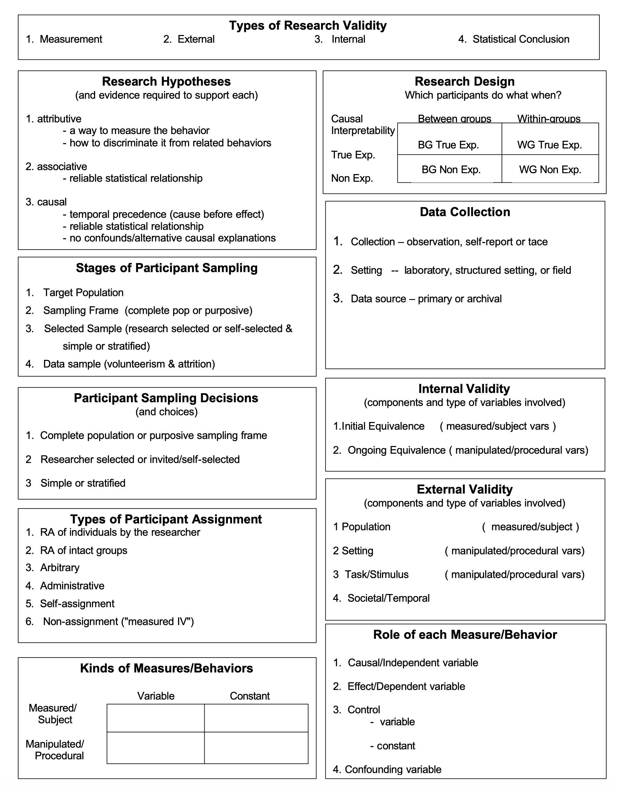
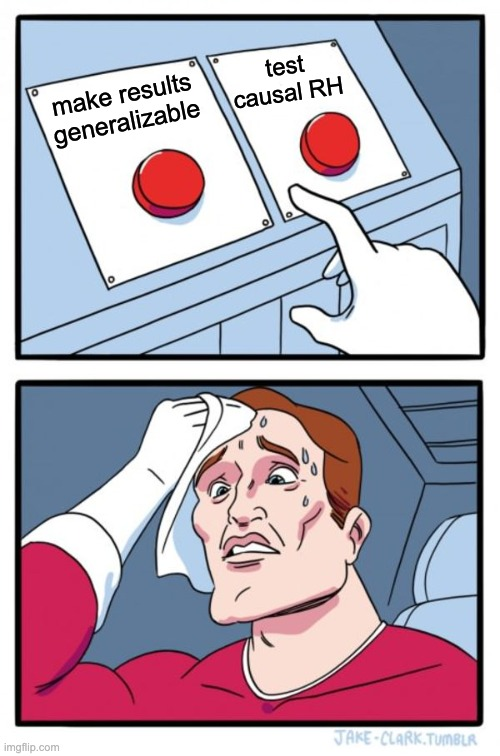

| Variable.Name | Levels.or.scale. | Manipulated.or.measured. | IV.or.DV.or... | If.IV..WG.or.BG. |
|---|---|---|---|---|
| Dancer size | thin/lg/animal | Man | IV | BG |
| Body satisfaction | 3-items, 0-100% | Meas | DV | -- |
| State appearance comparison | 3-items, 1-7 high | Meas | DV | -- |
| Direction of appearance comparison scale | 1-5 high better | Meas | DV | -- |
| Social Media Usage | 6-point, never ➭ 3h | Meas/Control | -- | -- |
Literature Reviews
Lab 6
Instructor: Emma Marshall, JD, MA
October 20, 2023
Today’s Tasks
- Today’s lab:
- How to read/interpret Research
- Lit Review Proposal (some things to think about as you read)
Review: Research Critiques
1 Hypotheses.
- Look for all statements about the research hypothesis.
- Remember can be explicit or implied
2 External validity components.
- What looks good? What raises red flags? What is unclear?
- Relate generalizability back to stated goals of study & pop of interest
3 Internal validity components.
- What looks good? What raises red flags? What is unclear?
- Relate confounds or causal interpretation back to stated goals of study & design/hypotheses
Review: Research Critiques
4 Anything else of interest you find!
- Measurement/Construct validity
- How did they operationalize and measure key concepts?
- Statistical Conclusion validity
- Can findings replicate?
- What about effect sizes?
5 Review your annotations and brainstorm alternatives.
- Make suggestions or identify gaps in knowledge, do not always want to change the purpose, hypothesis, or overall design.
Remember
Your job is to understand/critique the methods & procedures they actually used, not the ideal study in your head!
Review: Experimental Design and Validity
Review: Variables
Practice: Research Designs

Pobodies Nerfect!

Practice: Research Designs
Find the article
What is the theory
The theory behind the study is related to the potential of social media to impact body esteem:
- Media, especially its portrayal of the “thin ideal” where extremely slim bodies are considered attractive, has a significant impact on shaping these negative body perceptions.
- With the rise of social media platforms like TikTok, researchers are curious about how this new form of media might influence people’s body image.
Study 1: Overview
- Researchers recruited 262 women aged between 18 and 25 years for an online experiment.
- Ps randomly assigned to watch TikTok videos featuring:
- thin dancers
- large dancers
- videos of animals (control)
- Both before and after watching the videos, participants rated:
- weight satisfaction
- overall appearance satisfaction
- body shape satisfaction
Study 1: What type of Design?
Study 1: What were the Variables?
- Variable Name
- Levels or scale?
- Manipulated or measured?
- IV or DV or ?? If IV, WG or BG?
Study 1: What were the Variables?
Study 1: What are the Research Hypotheses?
Study 1: Results
- Body satisfaction increased after large dancers and control (animal) videos
- But decreased after thin dancer videos
Study 1: Are these results generalizable? Are they interpretable?
Purpose of Study 2
- Replicate study 1 results
- Identify why IV ➭ DV relationship
- Task/stimulus
Study 2: Task/stimulus changes?
Internal or External validity?
Study 2: Variables changes?
Internalization…?
Study 2: Variables
| Variable | Levels. | Manipulated.or.measured. | IV.or.DV.or... | If.IV..WG.or.BG. | X..Study.1... |
|---|---|---|---|---|---|
| Dancer size | thin/lg/animal | Man | IV | BG | Yes | | NA | NA |
| Body satisfaction | 3-items | Meas | DV | -- | Yes |
| State appearance comparison | 3-items | Meas | DV | -- | Yes |
| Direction of appearance comparison scale | 1-5, high better | Meas | DV | -- | Yes |
| Social Media Usage | 6-point, never - 3h | Meas | Control | -- | Yes |
| Trait appearance comparison (PACS) | 11-items | Meas | ?? | -- | No |
| Thin internalization (SATAQ) | 5-items | Meas | ?? | -- | No |
| Video Ratings | NA | NA | ?? | NA | Yes |
Study 2: Results?
Study 3: Purpose?
Warning
- Study 1 & 2:
- Ps aware study about body satisfaction…
- Used pretest-postest design…
- Demand characteristics!!
- Internal or External validity issue?
Study 3: Used post-test-only design
Warning
Demand characteristics can be a threat to either INTERNAL or EXTERNAL VALIDITY!
- Ps aware study about body satisfaction…may change behavior/answers!
- Used pretest-postest design…testing effects!
- Why use a posttest-only design to control for these validity threats?
Study 3: Design
- Recruited 375 women aged between 18 and 25 years and randomly assigned them to watch either TikTok videos of thin dancers or TikTok videos of large dancers.
- Posttest-only design
- Told ps study about how engaging different TikTok videos are
Study 3: Task/Stimulus and Procedures
Study 3: Results


What do you think of this set of studies?
- How does it do with four types of Validity?
- Internal Validity - how does it rule out threats?
- External Validity
- samples/task/generalizability?
- Measurement/Construct
- how does it measure the key concepts?
- Statistical Conclusion
- replicate? effect sizes?
Generalizing results?
Here’s how the researchers concluded an interview about their studies:
“The findings also raise the possibility that TikTok could change its algorithm and show a wider variety of body types, and this could have a major public health benefits. Body dissatisfaction is major risk factor for eating disorders and eating disorders have the highest mortality rate of all psychiatric diseases due to medical complications or suicide…”
Can we generalize to the algorithm on a users’ feed?
Limits of generalization
Sample ➡️ Population?
Setting/Task/Stimulus
TRAAP Method
How to evaluate sources but remember that context matters (assignement vs. paper vs. other?)
- Timeframe
- Relevance
- Authority
- Accuracy
- Purpose
Avoiding the TRAAP of relying on bad sources
How to evaluate sources but remember that context matters (assignement vs. paper vs. other?)
- Timeframe - Is it too old to be useful?
- Relevance - Does it give me the info I need right now?
- Authority - Who wrote it and why?
- Accuracy - Can claims be verified and how does it relate to other research?
- Purpose - Who is publishing this and why?
How to Improve your Writing
Adapted from slides How to Improve Your Writing with many thanks to: James A. Burns University of Nebraska-Lincoln
Writing Skills Matter
College performance impacted by the quality of your writing.
But you can improve your writing by properly organizing and structuring your ideas.
There are a few myths about writing that should be dispelled before we begin:
Great writers are born, not made by practicing.
I need an IQ in the 130’s in order to write well.
I need to have the vocabulary of a rocket scientist in order to write good papers.
My papers need to be over 30 pages in length in order to be acceptable.
I will never be good at writing papers.
Organization
The most important (and often the most easily improved) aspects of writing are clarity and organization.
The basic element of clarity and organization is a good paragraph.
A good paragraph has 3 parts:
A TOPIC SENTENCE (to introduce the paragraph)
3-10 CONTENT SENTENCES
A TRANSITION SENTENCE (to introduce the next paragraph)
Topic Sentences
The paragraph starts with what is called a “TOPIC SENTENCE”.
Introduces topic of paragraph the idea you will be discussing in that paragraph.
ALL SENTENCES IN THE PARAGRAPH AFTER THE TOPIC SENTENCE MUST PERTAIN TO AND SUPPORT THE TOPIC SENTENCE!
If there are sentences that do not pertain to the topic sentence, they are out of place (they probably belong in a different paragraph) and will only confuse the reader.
There may be three to ten content sentences that support the topic sentence.
Transitions
After you have fully explained the topic sentence, you need a sentence to lead the reader into the next paragraph.
This type of sentence is called a TRANSITION SENTENCE.
Learning to write good transitions takes practice.
The transition often relates the idea from the current paragraph with what will be talked about next.
The transition is ALWAYS the last sentence of a paragraph.
Tip
It is much like a “clue” about what you will talk about next.
Here is an example
The paragraph talked about the psychological treatment of social phobia in adults.
The transition sentence at the end of the paragraph is:
“Although much investigation has been done into the treatment of social phobia in adults, very little work has been done to address treatment avenues for children who suffer from the disorder.”
Can you guess what the next paragraph will be about?
You got it, the next paragraph will be about the treatment of children with social phobia!
Paragraphs
So, if we look at the format for any given paragraph, it should look like this.
TOPIC SENTENCE (new paragraph)
content sentence #1
content sentence #2
content sentence #3
. . .
content sentence #8
TRANSITION SENTENCE
TOPIC SENTENCE (new paragraph)
content sentence #1
content sentence #2
. . .
content sentence #5
TRANSITION SENTENCE
… and so on until the paper is finished!
There is no limit on how long a paragraph should be
But remember
If a paragraph is over 1 double-spaced page, it is probably too long. The reader may forget what idea the paragraph was discussing to begin with.
Remember that paragraphs that are too big, often are trying to say too much at one time.
Consider separating these multiple ideas and give each of them a separate paragraph, for a more complete description.
REMEMBER CLARITY IS THE ISSUE !
CLARITY IS ACHIEVED BY COMBINING SIMPLE, WELL-DESCRIBED IDEAS !!
Ordering Paragraphs
OK, in what order do I put the paragraphs?
Tip
The “rule of thumb” is that you begin with the most general idea, then narrow the focus with each successive paragraph, and finally return to remind the reader of the general idea. Here’s an example.
Ordering Paragraphs
OK, in what order do I put the paragraphs?
Tip
The “rule of thumb” is that you begin with the most general idea, then narrow the focus with each successive paragraph, and finally return to remind the reader of the general idea. Here’s an example.
Paragraph #1 Define social phobia
Paragraph #2 Describe the need for treating social phobia
Paragraph #3 Treatment of adults with social phobia
Paragraph #4 Treatment of children with social phobia
Paragraph #5 Inpatient versus outpatient treatment of social
phobia for children
Paragraph #6 Proposed study will compare which is better (this
paragraph will contain specific hypothesis about
which treatment will be better.
Paragraph #7 A brief review of social phobia and what the
proposed research will add to what we know.Organized papers are easier to read because they provide a road map.
Improve your organization
Make and outline BEFORE you start writing
Label each idea (paragraph) and which order you believe they should appear in your paper.
It will also be useful to write your topic sentences and transitions
before you sit down to write the rest of the paper.
“The way to learn to write is to write. There are no short-cuts.”
Improve your organization
Two things you should do after you finish your paper
Let the paper “get cold” for a day or two and re-read it (and probably re-write it - it never looks as good as you remember it being)
Let someone else read it – “peer review” brings fresh ideas & options
“The way to learn to write is to write. There are no short-cuts.”
Concise Writing
Most reviews of articles involve reporting a variety of information, including number of participants, materials used, etc. (see grading sheets).
While it is acceptable to report each “bit” of information in its own sentence, this leads to a bloated paper that is boring to read.
Good writers learn to integrate ideas and information into concise sentences and paragraphs.
Think about each “bit” of information you are including. Are they truly separate “bits” or are they describing different aspects of the same idea? Can the bits be combined into more descriptive sentences?
Examples
Nonintegrated (Boring)
Two hundred and four students participated in the study. All of the students were undergraduates in psychology. Roughly 84% of the participants were female. The materials used were the Beck Depression Inventory and the Beck Anxiety Inventory. The participants were brought into a large classroom and asked to fill out the inventories.
(52 words, 5 sentences)
Concise & Integrated
Two hundred and four undergraduate psychology students (84% female) participated in the study. The participants were brought into a large classroom and asked to fill out the Beck Depression Inventory and the Beck Anxiety Inventory.
(35 words, 2 sentences)
Overview: Reading Research and Note Taking
Tips and Tricks
Organize by question
Record appropriate citation (ZOTERO!!)
Note why this paper is important for your project
Follow the citations and references you find
Papers that have cited this paper
Papers this paper cites
More recent research has more weight
Read the results
Restate findings in own terms